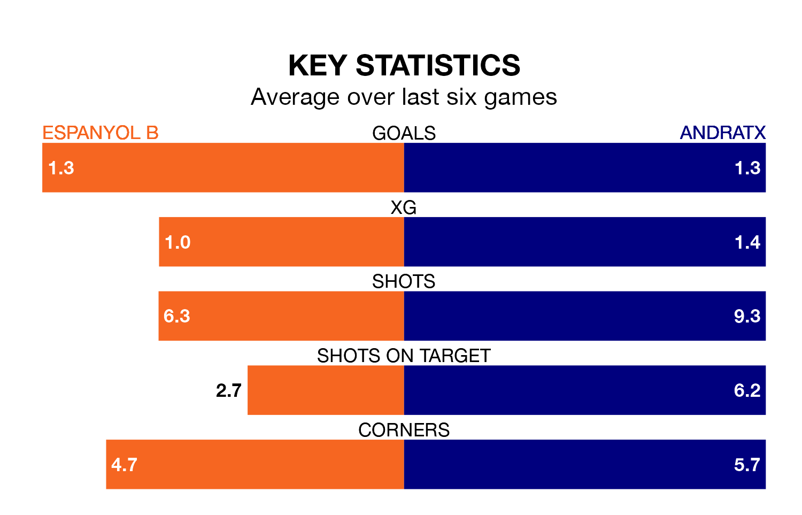

Espanyol B host Andratx on Sunday at Ciutat Esportiva Dani Jarque in the Segunda División RFEF Group 3.
In their last league match, on April 7, Espanyol B drew with UE Sant Andreu 1-1 away, with their goal scored by Francisco Javier Hernandez Coarasa.
Andratx lost, 3-2 at home against Lleida Esportiu on April 6, with Adrián Nicolás Flaqué Maccrae (two) scoring their goals.
With 37 goals in 30 games so far this season, Espanyol B are scoring at the league's average rate with 1.2 goals per game. And they are conceding fewer than average, letting in 34 goals at a rate of 1.1 per game.
Andratx are also average scorers, with 1.2 goals per game. They have conceded 1.4 goals per game.
The home team are sixth in the table after 30 games, of which they have won 11 and drawn 10, earning 43 points.
The visitors are six places behind Espanyol B in 12th, with 10 wins and nine draws putting them on 39 points.
In the last three years, Espanyol B and Andratx have played each other on three occasions. They won one each, and they drew once.
Their last meeting was on December 3, when Andratx won 2-1 at home.
Espanyol B are in mixed form in the Segunda División RFEF Group 3, with two wins and two draws from their last six games.
And also with two wins and two draws over that period, Andratx's form is identical – they have both taken eight points from 18.
Updated: 14:47 (UTC), 09/04/24